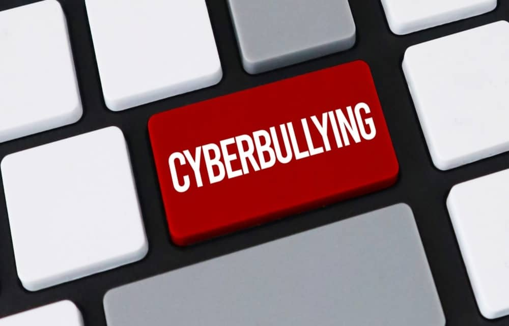

Spletno nasilje (trpinčenje,ustrahovanje) je nasilje ene ali več oseb ali skupino preko spleta(interneta)
Največkrat se spletno nasilje izvaja med najstniki oziroma medvrstniki.V nasilju smo lahko vpleteni na dva načina:žrtev povzročitelj ali kot opazovalci.Če smo opazovalec moramo to čim prej prijaviti policiji.
Žaljiva sporočila(flaming) in komentarji
Izključevanje iz skupin – skupina vrstnikov izloči vrstnika iz skupine na družabnem omrežju
Ustvarjanje sovražnih skupin – posamezniki ustvarijo skupino, v katero vabijo druge z namenom širjenja sovraštva proti posamezniku

Lažni profili – ustvarjanje lažnega profila žrtve na družbenih omrežjih in v njenem imenu objavljanje vsebin, ki to osebo spravljajo v zadrego ali jo ponižujejo
Predelave fotografij na žaljivi način – žaljiva predelava fotografije ali video posnetka z namenom ponižanja
Žaljivi memi - ustvarjanje memov s fotografijami, podatki vrstnika z namenom žaljenja, posmehovanja, poniževanja
Vdiranje v profile/račune – vdiranje (hekanje) v spletne profile žrtve na družbenih omrežjih ali račune elektronske pošte in podobno